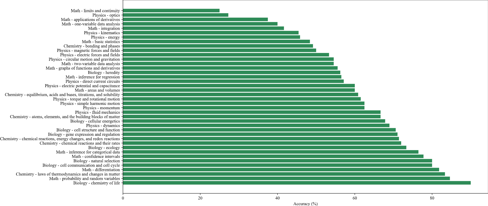

In our evaluation, we focus on two of the most representative Multimodal Large Language Models (MLLMs) currently available: GPT4-V and Gemini Pro. We tested these models under three distinct settings: zero-shot, few-shot, and text-only. In the zero-shot setting, the models are provided with the problem without any prior examples. The few-shot setting involves giving the models a small number of example problems and solutions to ‘learn’ from before attempting the new problems. We use hand-crafted text-only problems as examples since it is not flexible to insert multiple images in one API call. The text-only setting is a unique approach under zero-shot where only the textual content of the problem is provided to the model, without any accompanying images. All the prompts used in our experiments, along with detailed descriptions of each setting, are available for public view and replication in our Github repository.
For the evaluation metric, we have chosen to use exact-match-based accuracy, which is consistent with several prior studies (Lu et al., 2023; Yue et al., 2023a)in this domain. This metric is particularly suitable for our benchmark as both the multiple-choice and free-response problems have definitive, singular correct answers. In the multiple-choice format, this involves selecting the correct option out of the presented choices. For the free-response format, it requires generating an accurate and precise answer, be it a numerical value, a yes/no response, or a specific term for fill-in-the-blank questions. Empirically we use rule-based answer exaction for multiple choice questions, and GPT4 as evaluators for free response questions.

Accuracy Results of GPT4-V and Gemini Pro across different settings on Multiple Choice and Free Response problems in SceMQA

Accuracy distribution of GPT4-V on SceMQA
| Reset | Overall | Mathematics | Physics | Chemistry | Biology |
| GPT-4V(ision) (Playground) | 55.7 | 65.3 | 64.3 | 48.4 | 63.5 |
Overall results of different models on the SceMQA test set. The best-performing model in each category is in-bold, and the second best is underlined. *: results provided by the authors.